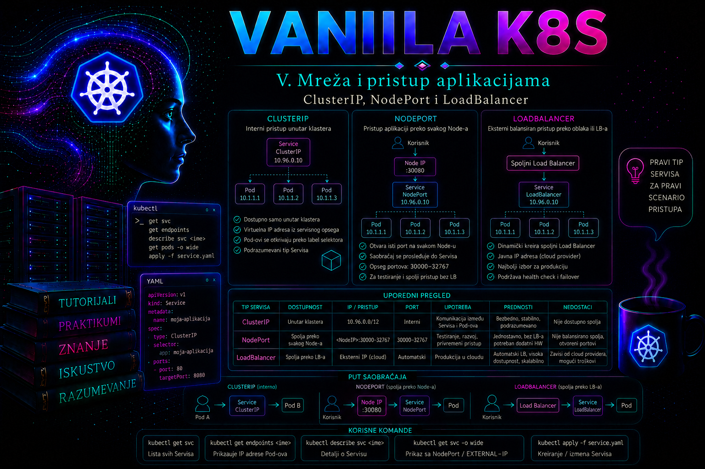

Vanilla Kubernetes

Kubernetes aplikacija najčešće nije predstavljena jednim trajnim Pod-om. Pod-ovi se zamenjuju tokom rollout-a, oporavka, skaliranja i premeštanja između worker čvorova, pa se menjaju i njihove IP adrese. Zbog toga klijenti ne treba da pristupaju aplikaciji preko adresa pojedinačnih Pod-ova. Objekat Service obezbeđuje stabilnu mrežnu pristupnu tačku i usmerava saobraćaj ka trenutno spremnim backend instancama. Tip servisa određuje sa kog dela mreže je ta pristupna tačka dostupna: samo iz klastera, preko portova worker čvorova ili preko spoljnog load balancer sistema.
ClusterIP, NodePort i LoadBalancer nisu tri nezavisna mehanizma. NodePort se uobičajeno nadograđuje na ClusterIP, dok LoadBalancer najčešće koristi ClusterIP i, zavisno od implementacije, NodePort ili direktno usmeravanje ka Pod endpoint-ima. Administrator zato ne bira tip samo prema pitanju „da li aplikacija treba da bude dostupna spolja”, već prema mrežnoj arhitekturi, načinu očuvanja izvorne IP adrese, bezbednosnim zonama, health check modelu, raspoloživom load balancer kontroleru i odgovornosti između aplikacionog, Kubernetes, mrežnog i bezbednosnog tima.
Service kao stabilna mrežna apstrakcija
Service najčešće bira Pod-ove pomoću label selektora. Kontrolna ravan na osnovu tog selektora održava objekte EndpointSlice, koji sadrže adrese odgovarajućih backend endpoint-a, njihove portove, stanje spremnosti i topološke podatke. Komponenta koja realizuje servisno prosleđivanje na čvorovima, tradicionalno kube-proxy, prati Service i EndpointSlice objekte i programira odgovarajuća pravila u mrežnom sloju operativnog sistema. U savremenim klasterima istu funkciju može realizovati i mrežni dodatak sa sopstvenim servisnim dataplane-om, na primer pomoću eBPF-a.
Service nije proces koji „radi” na ClusterIP adresi niti je ta adresa uobičajeno dodeljena mrežnom interfejsu. ClusterIP je virtuelna adresa iz servisnog CIDR opsega. Dataplane presreće saobraćaj namenjen toj adresi i prosleđuje ga jednom od odgovarajućih endpoint-a. Zbog toga komande kao što su ping ili provera prisustva ClusterIP adrese na interfejsu nisu pouzdan način validacije servisa. Proveravaju se DNS razrešenje, TCP ili UDP komunikacija na servisnom portu, EndpointSlice sadržaj, spremnost Pod-ova i pravila servisnog dataplane-a.
Konkretan dataplane mora se utvrditi pre dubinske dijagnostike. Kod Linux čvorova kube-proxy može koristiti iptables, nftables ili istorijski ipvs režim, dok pojedini CNI dodaci u potpunosti zamenjuju kube-proxy. nftables režim je stabilan od Kubernetes 1.33 i zahteva Linux kernel 5.13 ili noviji; ipvs režim je označen kao deprecated u Kubernetes 1.35, pa nove implementacije ne treba projektovati oko njega. Migracija režima nije samo promena imena: podrazumevane NodePort adrese i odnos prema lokalnom firewall-u mogu se razlikovati, zbog čega se promena najpre proverava u laboratoriji i prema dokumentaciji instaliranog CNI dodatka.
Najvažnija polja jednog servisnog porta imaju različite uloge. port je port koji klijent koristi na Service adresi. targetPort je port ka kome se saobraćaj prosleđuje na Pod-u i može biti broj ili imenovani port kontejnera. nodePort je dodatni port na čvorovima za NodePort i određene LoadBalancer implementacije. Polje protocol određuje transportni protokol, najčešće TCP ili UDP, a podrška za SCTP zavisi od mrežnog i operativnog okruženja.
spec:
selector:
app.kubernetes.io/name: web-demo
ports:
- name: http
protocol: TCP
port: 80
targetPort: http
Selektor mora odgovarati labelama na Pod šablonu, a ne nazivu Deployment-a. Greška u selektoru može proizvesti Service koji formalno postoji i ima ClusterIP, ali nema endpoint-e. To je jedno od najčešćih stanja u kome kubectl get service izgleda uredno, dok aplikacija nije dostupna. Administrator zato Service nikada ne smatra funkcionalnim samo zato što je API objekat uspešno kreiran.
ClusterIP – pristup unutar klastera
ClusterIP je podrazumevani tip servisa. Namenjen je komunikaciji između workload-a unutar klastera, kao što su frontend prema backend servisu, aplikacija prema internom API-ju ili kontrolisana komunikacija prema bazi podataka koja radi kao Kubernetes workload. Service dobija virtuelnu adresu iz servisnog CIDR opsega i DNS zapis. Pod u istom namespace-u može koristiti kratko ime, na primer web-demo, dok klijent iz drugog namespace-a koristi najmanje web-demo.mreza-lab. Potpuno kvalifikovano ime je u uobičajenoj konfiguraciji web-demo.mreza-lab.svc.cluster.local, ali domen klastera može biti drugačije konfigurisan.
ClusterIP nije podrazumevano rutabilan sa korisničke ili serverske mreže van klastera. Činjenica da administrator sa worker čvora može da pristupi ClusterIP adresi ne znači da je ona namenjena opštem spoljašnjem pristupu. Pokušaj oglašavanja celog servisnog CIDR-a u korporativnu mrežu bez jasnog dizajna može stvoriti asimetrično rutiranje, preklapanje adresa, neusklađene firewall politike i zavisnost od internog Kubernetes dataplane-a.
ClusterIP je odgovarajući izbor kada potrošači rade u klasteru, kada spoljni pristup obezbeđuje Ingress ili Gateway sloj, ili kada aplikacija ne sme neposredno da bude izložena van interne servisne mreže. Nije dovoljan kada legitimni klijenti van klastera moraju direktno da koriste TCP, UDP ili drugi podržani protokol, osim ako postoji zaseban proxy, gateway ili privatna mrežna integracija.
Posebna varijanta je headless Service sa clusterIP: None. On ne obezbeđuje jednu virtuelnu ClusterIP adresu, već DNS može vraćati adrese pojedinačnih endpoint-a. Takav servis se koristi kada klijent mora da otkrije članove sistema ili kada aplikacija sama upravlja raspodelom saobraćaja. Headless servis zato nije zamena za klasičan ClusterIP load balancing i ne treba ga birati samo zato što se administratoru čini jednostavnijim.
NodePort – pristup preko IP adresa čvorova
NodePort izlaže servis na istom portu na odgovarajućim IP adresama svakog čvora. Klijent koristi oblik NodeIP:NodePort, a servisni dataplane prosleđuje saobraćaj do odgovarajućeg backend Pod-a. Kubernetes po podrazumevanoj konfiguraciji automatski bira port iz opsega 30000–32767, mada administrator klastera može promeniti opseg pomoću konfiguracije API servera. Ručno zadati nodePort mora biti slobodan i unutar konfigurisanog opsega.
NodePort je koristan kao infrastrukturni građevni blok, za kontrolisani laboratorijski pristup, privremenu dijagnostiku, integraciju sa postojećim spoljnim load balancer uređajem ili za protokole za koje nije uveden viši gateway sloj. Međutim, direktno objavljivanje aplikacije korisnicima preko proizvoljne liste worker adresa i visokog porta obično nije kvalitetan produkcioni dizajn. Takav pristup komplikuje DNS, TLS, firewall pravila, zamenu čvorova, evidenciju vlasništva nad portovima i kontrolu javne površine napada.
NodePort nije automatski bezbedan zato što koristi visok broj porta. Ako firewall, sigurnosne grupe ili lokalna pravila dozvoljavaju taj port, servis može biti dostupan na većem broju interfejsa i čvorova nego što je planirano. Parametar --nodeport-addresses ili odgovarajuće polje u konfiguraciji kube-proxy komponente može ograničiti lokalne mrežne opsege na kojima se NodePort prihvata, ali ta funkcija mora biti deo dizajna klastera, a ne improvizovana promena na pojedinačnom čvoru.
Kod podrazumevane vrednosti externalTrafficPolicy: Cluster, čvor koji primi zahtev može ga proslediti Pod-u na drugom čvoru. Time se obezbeđuje šira raspoloživost endpoint-a, ali izvorna IP adresa klijenta može biti maskirana zbog izvornog NAT-a. Sa externalTrafficPolicy: Local čvor prosleđuje spoljni saobraćaj samo lokalnim endpoint-ima i može očuvati izvornu adresu klijenta. Međutim, zahtev poslat čvoru bez lokalnog spremnog endpoint-a neće biti prosleđen udaljenom Pod-u. Zbog toga spoljni load balancer mora pravilno proveravati koji čvorovi imaju zdrave lokalne endpoint-e.
LoadBalancer – integracija sa spoljnim load balancer sistemom
LoadBalancer traži od integrisanog kontrolera da obezbedi spoljašnju ili internu load balancer adresu i poveže je sa Kubernetes servisom. Kubernetes API definiše nameru i stanje objekta, ali osnovni Kubernetes projekat ne obezbeđuje univerzalni spoljašnji load balancer za svako okruženje. U javnom oblaku ovu funkciju obično realizuje cloud provider integracija. U bare-metal ili privatnom data centru mora postojati odgovarajući kontroler ili mrežna integracija, kao što su namenski load balancer uređaj, cloud-controller implementacija ili rešenje koje oglašava dodeljene adrese putem ARP/NDP ili BGP mehanizma.
Ako takva integracija ne postoji, Service tipa LoadBalancer može ostati sa statusom EXTERNAL-IP: <pending>. To nije kvar aplikacionih Pod-ova niti dokaz da treba menjati Deployment. Administrator prvo proverava da li je u klasteru instaliran i zdrav odgovarajući kontroler, da li postoji slobodan adresni opseg, da li su anotacije i klase podržane i da li identitet kontrolera ima potrebne privilegije prema spoljašnjem sistemu.
LoadBalancer servis je pogodan kada jedan L4 servis treba sopstvenu stabilnu adresu, kada se izlažu TCP ili UDP protokoli, kada je potrebna integracija sa korporativnim load balancer sistemom ili kada platforma standardizuje takav način objavljivanja. Za veliki broj HTTP i HTTPS aplikacija često je efikasnije da jedan Ingress ili Gateway sloj prihvati saobraćaj i rutira ga prema više ClusterIP servisa. Time se smanjuje broj spoljašnjih adresa i load balancer resursa, centralizuju TLS i politike i olakšava upravljanje domenima.
Polje loadBalancerClass omogućava izbor implementacije kada klaster ima kontrolere koji podržavaju klase load balancera. Anotacije su često specifične za proizvođača i mogu određivati internu ili javnu šemu, mrežne segmente, health check, algoritam, statičku adresu ili bezbednosne opcije. Pošto nisu prenosive između platformi, moraju biti dokumentovane kao infrastrukturna zavisnost. Polje spec.loadBalancerIP nije univerzalno podržan prenosiv način izbora adrese i njegova upotreba zavisi od konkretne implementacije.
Verzijski je važno da je spec.loadBalancerIP deprecated od Kubernetes 1.24: polje je nedovoljno precizno definisano, ponašanje mu zavisi od implementacije i ne podržava dual-stack model. Prednost imaju mehanizam konkretnog kontrolera ili Gateway implementacija. Kada se postavi loadBalancerClass, podrazumevani kontroler treba da ignoriše taj Service, a izabrana klasa mora imati odgovarajući kontroler; vrednost klase se posle kreiranja ne može menjati. Pogrešan izbor zato se ispravlja planskim kreiranjem zamenskog Service objekta i kontrolisanim prebacivanjem klijenata, a ne improvizovanim patch postupkom.
Savremene implementacije mogu usmeravati saobraćaj preko NodePort-a ili neposredno prema Pod adresama. Zato nije bezbedno pretpostaviti istu putanju na svim platformama. Polje allocateLoadBalancerNodePorts: false može sprečiti dodelu NodePort portova kada load balancer implementacija podržava direktno usmeravanje ka Pod-ovima. Pre njegove upotrebe mora se potvrditi podrška konkretnog kontrolera; u suprotnom load balancer može dobiti adresu, ali ne i funkcionalnu putanju do backend-a.
Ako se allocateLoadBalancerNodePorts naknadno promeni sa true na false, već dodeljeni NodePort portovi ne uklanjaju se automatski. Njihovo oslobađanje zahteva eksplicitno uklanjanje nodePort vrednosti iz svakog servisnog porta, tek pošto je dokazana direktna backend putanja i pripremljen rollback. Statusno polje .status.loadBalancer.ingress[].ipMode, kada ga kontroler postavi uz IP adresu, dodatno pokazuje da li se adresa ponaša kao VIP ili kao Proxy; to je koristan dokaz putanje, ali nije konfiguracioni zahtev koji administrator aplikacionog namespace-a treba sam da upisuje.
Izbor tipa servisa i tok saobraćaja
| Tip | Pristupna tačka | Najčešća namena | Ključna zavisnost ili rizik |
|---|---|---|---|
| ClusterIP | Virtuelna IP adresa i DNS unutar klastera | Komunikacija workload-a i backend za Ingress/Gateway | Nije podrazumevano dostupan van klastera |
| NodePort | IP adresa čvora i zajednički visoki port | Infrastrukturna integracija, laboratorija, privremeni ili specifični L4 pristup | Firewall, izloženost svih čvorova, očuvanje izvorne IP adrese |
| LoadBalancer | Adresa koju obezbeđuje spoljna implementacija | Produkcioni L4 pristup i integracija sa cloud ili data-centar mrežom | Zavisi od kontrolera, adresnog opsega, ruta i spoljnog health check-a |
Administrator treba da posmatra kompletnu putanju: klijent, DNS, firewall, spoljni load balancer, IP adresa čvora ili Pod-a, servisni dataplane, EndpointSlice i aplikacioni proces. Ako je ClusterIP funkcionalan, a NodePort nije, problem je verovatnije u pristupu čvoru, firewall-u, adresama na kojima dataplane prihvata NodePort ili eksternoj politici saobraćaja. Ako NodePort radi, a LoadBalancer adresa ne radi, proveravaju se load balancer kontroler, oglašavanje adrese, rute, health check i spoljna ACL pravila. Ako ne radi ni ClusterIP, fokus se vraća na selector, endpoint-e, portove, readiness i mrežu između čvorova i Pod-ova.
internalTrafficPolicy: Local ograničava saobraćaj koji dolazi na ClusterIP tako da koristi samo endpoint-e na istom čvoru sa kog saobraćaj potiče. To može smanjiti latenciju i međučvorni saobraćaj, ali nije opšta optimizacija: Pod na čvoru bez lokalnog endpoint-a neće dobiti uslugu iako zdravi endpoint-i postoje drugde. Topology Aware Routing može preferirati endpoint-e u istoj zoni kada su ispunjeni uslovi, ali ne sme se koristiti kao zamena za pravilno planiranje dostupnosti i rasporeda replika.
Portovi, protokoli, endpoint-i i stanje spremnosti
Service prosleđuje saobraćaj samo ka endpoint-ima koje kontrolna ravan smatra pogodnim. Readiness probe je zato deo mrežne dostupnosti, a ne samo informativni indikator. Pod koji radi, ali nije Ready, po pravilu neće biti korišćen kao spreman servisni backend. Pogrešna readiness provera može izbaciti sve replike iz servisa ili, suprotno tome, prerano uključiti aplikaciju koja još ne može da obrađuje zahteve.
Imenovani targetPort olakšava promenu broja porta u Pod šablonu bez izmene Service objekta, pod uslovom da kontejnerski port zadrži isto ime. To je korisno tokom verzijskih promena, ali zahteva dosledno imenovanje. Ako Service koristi targetPort: http, a Pod nema port sa imenom http, endpoint port neće biti pravilno razrešen.
Service ne proverava sadržaj HTTP odgovora kao aplikacioni reverse proxy. L4 prosleđivanje samo dovodi konekciju do endpoint-a, dok kvalitet health check-a zavisi od readiness probe mehanizma i spoljne load balancer implementacije. Za TLS terminaciju, HTTP putanje, zaglavlja, preusmeravanja i napredne L7 politike obično su potrebni Ingress, Gateway API ili odgovarajući spoljašnji proxy, a ne samo promena tipa Service objekta.
Bezbednost i produkcioni rizici
Service sam po sebi nije kontrola identiteta niti kompletan firewall. ClusterIP ne znači automatski da svakom Pod-u treba dozvoliti pristup. NetworkPolicy, ako je podržava instalirani CNI dodatak, služi za ograničavanje dozvoljenih izvora i odredišta na L3/L4 nivou. Autentikacija, autorizacija i TLS ostaju odgovornost aplikacije ili odgovarajućeg gateway sloja.
- Preširoka izloženost NodePort-a: port može biti dostupan na svim pogodnim adresama više čvorova. Mrežni tim mora potvrditi dozvoljene izvorne mreže, odredišne adrese i firewall pravila.
- Neplanirana javna LoadBalancer adresa: platformska podrazumevana vrednost može kreirati javni load balancer. Interni servisi moraju koristiti dokumentovani mehanizam za privatnu šemu i odgovarajuće anotacije ili klase.
- Gubitak izvorne IP adrese:
externalTrafficPolicy: Clustermože dovesti do SNAT-a. Pre prelaska naLocalproveravaju se raspored replika i health check ponašanje. - Pogrešan selektor: servis može slučajno obuhvatiti Pod-ove druge verzije ili komponente ako su labele previše opšte. Koriste se standardizovane, dovoljno specifične labele.
- Nedokumentovane platformske anotacije: migracija na drugi cloud ili load balancer kontroler može promeniti ponašanje ili potpuno onemogućiti provisioning.
Promena tipa servisa može otvoriti novu mrežnu putanju bez promene aplikacionog koda. Zbog toga se tretira kao infrastrukturna promena: zahteva vlasnika, odobrenje, procenu uticaja, plan validacije i rollback. Administrator ne treba samostalno da bira javnu adresu, DNS ime, TLS model ili dozvoljene izvore kada su te odluke u nadležnosti mrežnog, bezbednosnog ili aplikacionog vlasnika.
Integrisani praktikum – kontrolisano izlaganje interne web aplikacije
Poslovni i tehnički kontekst. Interna web aplikacija web-demo prvo mora biti dostupna drugim workload-ima u klasteru, zatim privremeno mrežnom timu preko NodePort-a radi validacije firewall putanje, a na kraju preko privatne LoadBalancer adrese. Referentni Vanilla Kubernetes klaster ima najmanje dva Linux worker čvora, funkcionalan CNI, CoreDNS i servisni dataplane. U bare-metal okruženju unapred je instaliran odobreni LoadBalancer kontroler sa privatnim adresnim opsegom. Praktikum ne instalira taj kontroler, jer je to klasterska promena u nadležnosti platformskog tima.
Cilj. Implementirati Deployment sa tri replike, potvrditi ispravan ClusterIP tok, kontrolisano dodati NodePort, proveriti negativan pristup van odobrene putanje, zatim preći na LoadBalancer i dokumentovati rezultat. Svi objekti nalaze se u namespace-u mreza-lab, a manifest se čuva kao ~/vanilla-k8s-lab/26-services/web-demo.yaml.
Prava pristupa. Operateru su potrebne dozvole za čitanje namespace-a, Pod-ova, Deployment-a, Service i EndpointSlice objekata, kao i za kreiranje, izmenu i brisanje Deployment-a i Service objekta u namespace-u mreza-lab. Čitanje logova sistemskih komponenti, promena firewall-a, konfiguracije kube-proxy komponente i LoadBalancer kontrolera ostaju privilegije klaster ili mrežnog administratora. Pre početka se proveravaju dozvole:
kubectl auth can-i create deployments.apps -n mreza-lab
kubectl auth can-i create services -n mreza-lab
kubectl auth can-i get endpointslices.discovery.k8s.io -n mreza-lab
kubectl auth can-i delete services -n mreza-lab
Očekivani odgovor za predviđeni nalog je yes. Odgovor no nije razlog za korišćenje administratorskog kubeconfig fajla bez odobrenja, već za zahtev vlasniku RBAC politike.
-
Provera početnog stanja klastera.
Pre promene proveravaju se kontekst, čvorovi, sistemski Pod-ovi i eventualno postojeći objekti istog imena. Time se sprečava implementacija u pogrešnom klasteru ili namespace-u.
Validacija: svi čvorovi predviđeni za workload treba da budukubectl config current-context kubectl get nodes -o wide kubectl get pods -n kube-system kubectl get namespace mreza-lab kubectl get deployment,service -n mreza-labReady, DNS i mrežne komponente moraju biti funkcionalne, a postojeći objekti moraju biti identifikovani pre izmene. Ako namespace ne postoji i operater ima odobrenje za njegovo kreiranje, pravi se sledećom komandom:kubectl create namespace mreza-lab kubectl label namespace mreza-lab purpose=network-service-lab -
Kreiranje referentnog manifesta.
Direktorijum i manifest se kreiraju pre upotrebe. Slika
registry.k8s.io/e2e-test-images/agnhost:2.53koristi se kao jednostavan HTTP server za laboratorijsku proveru; u produkciji se koristi organizaciono odobren registry i pinovani digest. Manifest se najpre generiše lokalno, a--dry-run=serverpredstavlja read-only validaciju prema API serveru i ne kreira objekte.
Validacija: server-side dry run mora prihvatiti oba objekta bez greške. Greške u API verziji, poljima ili RBAC dozvolama rešavaju se pre stvarne primene.mkdir -p ~/vanilla-k8s-lab/26-services cat > ~/vanilla-k8s-lab/26-services/web-demo.yaml <<'EOF' apiVersion: apps/v1 kind: Deployment metadata: name: web-demo namespace: mreza-lab labels: app.kubernetes.io/name: web-demo app.kubernetes.io/component: web spec: replicas: 3 selector: matchLabels: app.kubernetes.io/name: web-demo app.kubernetes.io/component: web template: metadata: labels: app.kubernetes.io/name: web-demo app.kubernetes.io/component: web spec: containers: - name: web image: registry.k8s.io/e2e-test-images/agnhost:2.53 args: - netexec - --http-port=8080 ports: - name: http containerPort: 8080 protocol: TCP readinessProbe: httpGet: path: /hostname port: http initialDelaySeconds: 2 periodSeconds: 5 timeoutSeconds: 2 failureThreshold: 3 resources: requests: cpu: 20m memory: 32Mi limits: cpu: 100m memory: 64Mi --- apiVersion: v1 kind: Service metadata: name: web-demo namespace: mreza-lab labels: app.kubernetes.io/name: web-demo spec: type: ClusterIP selector: app.kubernetes.io/name: web-demo app.kubernetes.io/component: web ports: - name: http protocol: TCP port: 80 targetPort: http EOF kubectl apply --dry-run=server -f ~/vanilla-k8s-lab/26-services/web-demo.yaml -
Implementacija Deployment-a i ClusterIP servisa.
Deklarativna primena čuva manifest kao izvor željenog stanja.
Validacija: Deployment mora imati tri dostupne replike, svi Pod-ovi treba da budukubectl apply -f ~/vanilla-k8s-lab/26-services/web-demo.yaml kubectl rollout status deployment/web-demo -n mreza-lab --timeout=120s kubectl get pods -n mreza-lab -l app.kubernetes.io/name=web-demo -o wide kubectl get service web-demo -n mreza-lab -o wideRunningiReady, a Service mora imati tipClusterIP, dodeljenu ClusterIP adresu i port80/TCP. -
Provera selektora i EndpointSlice objekata.
Ovaj korak dokazuje da Service zaista ima backend-e, umesto da se oslanja samo na postojanje ClusterIP adrese.
Validacija: EndpointSlice prikaz treba da sadrži tri spremne adrese i port 8080. Prazno polje endpoint-a ukazuje na pogrešne labele, nespremne Pod-ove ili neusaglašen imenovani port.kubectl get service web-demo -n mreza-lab -o jsonpath='{.spec.selector}{"\n"}' kubectl get pods -n mreza-lab -l app.kubernetes.io/name=web-demo,app.kubernetes.io/component=web --show-labels kubectl get endpointslices -n mreza-lab \ -l kubernetes.io/service-name=web-demo -o wide kubectl describe service web-demo -n mreza-lab -
Funkcionalni ClusterIP i DNS test.
Privremeni HTTP klijent pokreće se u istom namespace-u. DNS se proverava zasebnim kratkotrajnim Pod-om sa zvaničnom Kubernetes test slikom koja sadrži DNS alate; time se ne pretpostavlja da minimalna
curlslika imanslookup. HTTP komanda zatim pristupa servisu više puta kako bi se videlo da zahteve obrađuju različite replike.
Validacija: DNS treba da vrati ClusterIP adresu, svi HTTP zahtevi moraju biti uspešni, a u više pokušaja očekuje se najmanje jedan važeći hostname backend Pod-a. Raspodela se tipično obavlja po konekciji i nije strogo garantovana kao ravnomerna u samo šest zahteva, pa se ne zahteva da se pojave sva tri imena.kubectl run service-client -n mreza-lab \ --image=curlimages/curl:8.12.1 \ --restart=Never \ --command -- sleep 3600 kubectl wait --for=condition=Ready pod/service-client \ -n mreza-lab --timeout=90s kubectl run dns-client -n mreza-lab --rm -i --restart=Never \ --image=registry.k8s.io/e2e-test-images/dnsutils:1.3 -- \ nslookup web-demo.mreza-lab.svc.cluster.local kubectl exec -n mreza-lab service-client -- \ sh -c 'for i in 1 2 3 4 5 6; do curl -fsS http://web-demo/hostname; echo; done' -
Negativni test pogrešnog porta.
Test potvrđuje da servis nije slučajno izložen na portu koji nije deklarisan.
Validacija: povezivanje na port 81 mora biti neuspešno, a završni rezultat komande uspešan zato što je neuspeh konekcije očekivan. Ako port 81 odgovara, proveravaju se proxy promenljive, service mesh sidecar, pogrešna adresa i drugi mrežni posrednici.kubectl exec -n mreza-lab service-client -- \ sh -c 'curl --connect-timeout 3 -fsS http://web-demo:81/hostname; test $? -ne 0' -
Kontrolisana promena u NodePort.
Pre izmene se snima postojeće stanje radi audita i rollback-a. Port se ne bira ručno, čime se izbegava konflikt sa drugim servisima.
Validacija: tip mora bitikubectl get service web-demo -n mreza-lab -o yaml \ > ~/vanilla-k8s-lab/26-services/web-demo-service-before-nodeport.yaml kubectl patch service web-demo -n mreza-lab \ --type=merge -p '{"spec":{"type":"NodePort"}}' kubectl get service web-demo -n mreza-lab -o wide NODE_PORT=$(kubectl get service web-demo -n mreza-lab \ -o jsonpath='{.spec.ports[?(@.name=="http")].nodePort}') echo "${NODE_PORT}"NodePort, ClusterIP mora ostati dodeljen, a promenljivaNODE_PORTmora sadržati port iz konfigurisanog NodePort opsega. -
Validacija NodePort putanje.
Bira se interna adresa jednog Ready worker čvora. Test se izvodi samo iz administrativne mreže kojoj je pristup odobren.
Validacija: NodePort zahtev mora vratiti hostname jednog backend Pod-a, a ClusterIP pristup mora nastaviti da radi. Ako ClusterIP radi, a NodePort ne, proveravaju se izvorna mreža, ruta do čvora, firewall, izabrana adresa čvora i konfiguracija adresa na kojima servisni dataplane prihvata NodePort.WORKER_IP=$(kubectl get nodes \ -l '!node-role.kubernetes.io/control-plane' \ -o jsonpath='{.items[0].status.addresses[?(@.type=="InternalIP")].address}') echo "${WORKER_IP}:${NODE_PORT}" curl --connect-timeout 5 -fsS \ "http://${WORKER_IP}:${NODE_PORT}/hostname" kubectl exec -n mreza-lab service-client -- \ curl -fsS http://web-demo/hostname -
Negativni test mrežnog ograničenja.
Mrežni tim iz neodobrene test mreže pokušava pristup istom
NodeIP:NodePortodredištu. Ovaj test se ne može pouzdano simulirati iz istog klijentskog Pod-a, jer on koristi drugu mrežnu putanju.
Očekivani rezultat: iz neodobrene mreže konekcija mora biti odbijena ili isteći u skladu sa firewall politikom. Ako je uspešna, Service objekat radi, ali je bezbednosna kontrola preširoka; incident se eskalira mrežnom i bezbednosnom timu uz izvor, odredište, vreme testa i dodeljeni NodePort.curl --connect-timeout 5 \ "http://${WORKER_IP}:${NODE_PORT}/hostname" -
Prelazak na privatni LoadBalancer.
Preduslov je potvrda platformskog tima da podrazumevana klasa u ovom klasteru dodeljuje privatnu adresu. Ako su za privatnu šemu potrebne platformske anotacije ili
loadBalancerClass, one se unose u organizacioni manifest pre primene, a ne nagađaju tokom promene.
Validacija: praćenje se prekida kombinacijom tasterakubectl get service web-demo -n mreza-lab -o yaml \ > ~/vanilla-k8s-lab/26-services/web-demo-service-before-loadbalancer.yaml kubectl patch service web-demo -n mreza-lab \ --type=merge -p '{"spec":{"type":"LoadBalancer"}}' kubectl get service web-demo -n mreza-lab -wCtrl+Ckada se u statusu pojavi odobrena privatna adresa ili hostname. Stanje<pending>duže od organizacionog provisioning praga zahteva proveru događaja, kontrolera i adresnog opsega; ne rešava se nasumičnim anotacijama. Potvrđuje se i da li su dodeljeni NodePort portovi, jer to otkriva da li ova implementacija koristi ugnježdenu NodePort putanju. -
Završna funkcionalna provera LoadBalancer adrese.
Adresa se čita iz statusa objekta, a zatim testira iz odobrene korisničke ili serverske mreže.
Validacija: status mora sadržati očekivanu privatnu adresu ili hostname, HTTP odgovor mora biti uspešan, tri spremna endpoint-a moraju ostati registrovana, a ClusterIP pristup iz klijentskog Pod-a mora i dalje raditi.LB_ADDRESS=$(kubectl get service web-demo -n mreza-lab \ -o jsonpath='{.status.loadBalancer.ingress[0].ip}') if [ -z "${LB_ADDRESS}" ]; then LB_ADDRESS=$(kubectl get service web-demo -n mreza-lab \ -o jsonpath='{.status.loadBalancer.ingress[0].hostname}') fi echo "${LB_ADDRESS}" curl --connect-timeout 5 -fsS \ "http://${LB_ADDRESS}/hostname" kubectl get service web-demo -n mreza-lab -o yaml kubectl get endpointslices -n mreza-lab \ -l kubernetes.io/service-name=web-demo -o wide
Relevantni logovi i razlikovanje kvarova. Za aplikacioni problem pregledaju se kubectl logs -n mreza-lab deployment/web-demo, događaji i readiness stanje. Za problem servisnog dataplane-a klaster administrator pregleda logove kube-proxy DaemonSet-a, ako se kube-proxy koristi, ili logove i metrike mrežnog dodatka koji realizuje Service funkciju. U systemd instalacijama kube-proxy log može biti dostupan kroz journalctl -u kube-proxy, dok se kod Pod implementacije koristi kubectl logs -n kube-system nad odgovarajućim Pod-om.
kubectl get events -n mreza-lab \
--sort-by=.metadata.creationTimestamp
kubectl describe pod -n mreza-lab \
-l app.kubernetes.io/name=web-demo
kubectl logs -n mreza-lab deployment/web-demo --tail=100
kubectl get pods -n kube-system -o wide
kubectl get pods -A | grep -Ei 'proxy|cilium|calico|metal|load|cloud'LoadBalancer provisioning problemi traže se u logovima kontrolera koji upravlja spoljnim resursom. U bare-metal implementaciji to mogu biti odvojeni controller i speaker Pod-ovi; u cloud okruženju cloud-controller-manager ili namenski cloud provider kontroler. Logovi se tumače prema konkretnoj implementaciji, naročito poruke o iscrpljenom adresnom opsegu, neuspešnoj autorizaciji, nepodržanoj anotaciji, neuspešnom oglašavanju rute ili health check-u.
Tipične greške. Service bez endpoint-a ukazuje na selektor, readiness ili targetPort. ClusterIP koji radi uz nefunkcionalan NodePort usmerava istragu ka firewall-u, rutama i dataplane-u čvora. NodePort koji radi uz LoadBalancer u stanju pending ukazuje na provisioning kontroler ili nedostupnu adresu. Dodeljena LoadBalancer adresa bez HTTP odgovora zahteva proveru oglašavanja adrese, spoljnog health check-a, ACL pravila, externalTrafficPolicy vrednosti i stvarne backend putanje. HTTP greška aplikacije, kao što je 500, pokazuje da je mrežna putanja verovatno uspostavljena, ali backend nije funkcionalan.
Rollback i cleanup. Ako LoadBalancer promena izazove problem, bezbedniji prvi rollback je vraćanje na prethodni tip uz očuvanje Deployment-a. Vraćanje na NodePort koristi sledeću komandu:
kubectl patch service web-demo -n mreza-lab \
--type=merge -p '{"spec":{"type":"NodePort"}}'
kubectl get service web-demo -n mreza-lab -o wide
kubectl exec -n mreza-lab service-client -- \
curl -fsS http://web-demo/hostname
Za potpuno vraćanje na interni pristup koristi se ClusterIP. Promena može pokrenuti uklanjanje spoljnog load balancer resursa, pa se izvršava tek nakon potvrde da ga ne koriste drugi sistemi:
kubectl patch service web-demo -n mreza-lab \
--type=merge -p '{"spec":{"type":"ClusterIP"}}'
kubectl get service web-demo -n mreza-lab -o wide
kubectl delete pod service-client -n mreza-labNakon završetka cele laboratorije i potvrde da objekti nisu potrebni, cleanup se izvodi deklarativno. Ovo je destruktivna operacija: uklanja aplikaciju i servis iz namespace-a, a kod LoadBalancer tipa može ukloniti i povezani spoljni resurs.
kubectl delete -f ~/vanilla-k8s-lab/26-services/web-demo.yaml
kubectl get deployment,service,pod -n mreza-lab
kubectl get endpointslices -n mreza-lab \
-l kubernetes.io/service-name=web-demoMerljivi kriterijumi prihvatanja. Deployment ima tri od tri dostupne replike; EndpointSlice sadrži tri spremna endpoint-a na portu 8080; DNS ime servisa se razrešava iz namespace-a; najmanje deset uzastopnih ClusterIP zahteva prolazi bez greške; NodePort je dostupan iz odobrene, a nije dostupan iz neodobrene mreže; LoadBalancer dobija odobrenu privatnu adresu u okviru organizacionog provisioning praga; HTTP provera preko te adrese prolazi; nema ponavljajućih upozorenja u događajima; rollback vraća ClusterIP funkcionalnost bez izmene Deployment-a.
Administratorske prakse
- Praćenje servisa bez spremnih endpoint-a. Proveravaju se EndpointSlice objekti i odnos između broja željenih replika i spremnih endpoint-a pomoću
kubectl get endpointslices -A, monitoring platforme i alarma nad Kubernetes metrikama. Provera se izvršava kontinuirano i posle svakog rollout-a. Service sa nulom spremnih endpoint-a duže od definisanog readiness perioda zahteva pregled Pod stanja, selektora i probe konfiguracije. Dokumentuju se pogođeni servis, početak i trajanje prekida, uzrok i korektivna mera u incident ili change sistemu. Uspeh se meri smanjenjem vremena bez endpoint-a i broja ponovljenih incidenata. - Kontrola NodePort inventara. Najmanje nedeljno i posle mrežnih promena izvozi se lista pomoću
kubectl get services -A -o custom-columnsili CMDB integracije. Reaguje se na servise bez vlasnika, ručno zadate portove van standarda, servise izložene duže od odobrenog perioda i portove dostupne iz neodobrenih mreža. Prva reakcija je potvrda poslovnog vlasnika i mrežne potrebe, a ne trenutno brisanje. Evidentiraju se namespace, Service, port, vlasnik, firewall pravilo i datum isteka. Uspešnost se meri procentom NodePort servisa sa važećim vlasnikom i odobrenjem. - Praćenje LoadBalancer provisioning-a. Kontinuirano se prati vreme od kreiranja servisa do popunjavanja
status.loadBalancer, stanje kontrolera, slobodne adrese i greške spoljnog sistema. Prekoračenje internog SLA praga ili ponovljene reconciliation greške pokreću proveru događaja i logova kontrolera. Dokumentuju se tražena klasa, anotacije, dodeljena adresa, identifikator spoljnog resursa i vreme provisioning-a. Uspeh se meri procentom uspešno dodeljenih adresa i p95 vremenom provisioning-a. - Validacija izvorne IP adrese i traffic policy vrednosti. Posle promene
externalTrafficPolicyproveravaju se aplikacioni access logovi, raspored Pod-ova po čvorovima i health check stanje load balancera. Nestanak originalne klijentske adrese ili ispad čvorova bez lokalnih endpoint-a zahteva vraćanje politike ili korekciju rasporeda replika i health check-a. Rezultat se upisuje u mrežni dizajn i change zapis. Uspeh predstavlja očuvana očekivana izvorna adresa bez smanjenja raspoloživosti. - Periodična provera pristupa. Sintetičke provere koriste DNS ime, ClusterIP putanju iz klastera i LoadBalancer adresu iz odgovarajuće spoljne zone. Izvršavaju se najmanje svakog minuta za kritične servise i posle promene aplikacije, mreže ili sertifikata. Više uzastopnih neuspeha zahteva korelaciju sa endpoint-ima, događajima i load balancer health check-om. Dokumentuju se SLI rezultat, trajanje prekida i pogođena putanja. Uspeh se meri raspoloživošću i vremenom detekcije.
- Čuvanje i oporavak konfiguracije. Service i povezani Deployment manifesti čuvaju se u verzionisanom repozitorijumu, dok platforma obezbeđuje redovan backup stanja klastera, uključujući relevantne API objekte u etcd backup-u. Integritet se proverava hash vrednostima, statusom backup posla i probnim restore-om u izolovano okruženje. Probni restore mora vratiti Service specifikaciju, selektor, portove i povezane workload objekte bez nekontrolisanog kreiranja javnog load balancera. Uspešan backup je samo onaj iz kog je dokumentovano izveden i validiran restore.
Kontrolna lista
- Potvrđen je tačan kubeconfig kontekst i ciljni namespace pre promene.
- Deployment ima očekivan broj Ready replika, potvrđen komandom
kubectl rollout statusi pregledom Pod-ova. - Service selektor odgovara labelama Pod-ova, a EndpointSlice sadrži očekivani broj spremnih adresa.
port,targetPort, protokol i imenovani kontejnerski port međusobno su usklađeni.- ClusterIP DNS ime se razrešava, a funkcionalni zahtev iz klijentskog Pod-a prolazi.
- NodePort je evidentiran, dostupan samo iz odobrenih mreža i povezan sa važećim firewall pravilom.
- LoadBalancer kontroler je identifikovan, a dobijena adresa pripada odobrenom privatnom ili javnom opsegu.
- Provereni su
externalTrafficPolicy, očuvanje izvorne IP adrese i health check ponašanje. - Negativni test neodobrenog porta ili izvora daje očekivani neuspeh.
- Događaji, aplikacioni logovi i logovi mrežnog ili LoadBalancer kontrolera ne sadrže ponavljajuće greške.
- Manifest, rezultat testiranja, dodeljene adrese, vlasnik servisa i rollback postupak upisani su u repozitorijum i change evidenciju.
- Rollback je proveren tako da vraćanje na ClusterIP ne prekida internu servisnu komunikaciju.
Zaključak
Administrator nakon ove lekcije treba da razume da tip Service objekta ne menja samo mesto na kome se aplikaciji pristupa, već određuje mrežnu putanju, spoljne zavisnosti, površinu izloženosti i način dijagnostike. ClusterIP je osnovni interni servisni model, NodePort dodaje pristup preko čvorova, a LoadBalancer povezuje Kubernetes nameru sa infrastrukturom koja mora postojati izvan samog Service API objekta.
Praktična odgovornost administratora obuhvata usklađivanje selektora, portova, endpoint-a i readiness stanja; potvrdu DNS i mrežne komunikacije; razlikovanje aplikacionog kvara od problema servisnog dataplane-a, firewall-a ili spoljnog load balancera; izvođenje negativnih testova; očuvanje rollback mogućnosti i dokumentovanje svake mrežne promene. Posebnu pažnju zahtevaju izvorna IP adresa, traffic policy vrednosti, raspored replika, javna ili privatna priroda dodeljene adrese i platformske anotacije koje smanjuju prenosivost manifesta.
Granica ovlašćenja mora ostati jasna. Namespace administrator može upravljati dozvoljenim Service objektima, ali ne treba bez odobrenja da menja NodePort opseg, kube-proxy konfiguraciju, BGP oglašavanje, firewall, cloud naloge ili korporativni load balancer. Nedostatak slobodnih adresa, neuspeh kontrolera, asimetrično rutiranje, bezbednosno odstupanje, nejasan vlasnik javne usluge ili potreba za promenom klasterskog dataplane-a predstavljaju razlog za eskalaciju platformskom, mrežnom ili bezbednosnom timu. Kvalitetna implementacija nije samo Service sa dodeljenom adresom, već proverena, ograničena, merljiva i dokumentovana mrežna usluga čije je ponašanje poznato i u normalnom radu i tokom kvara.